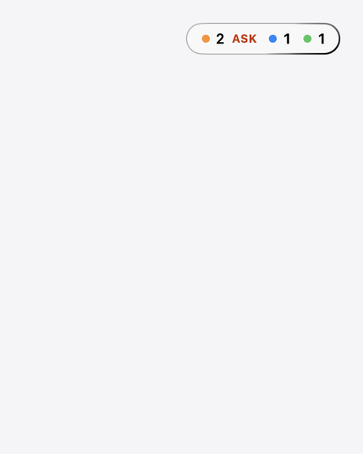
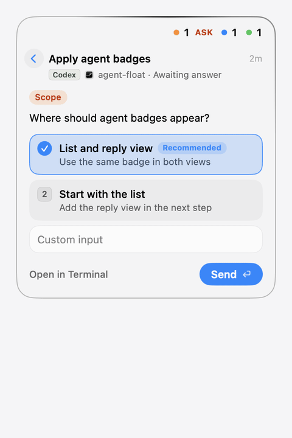
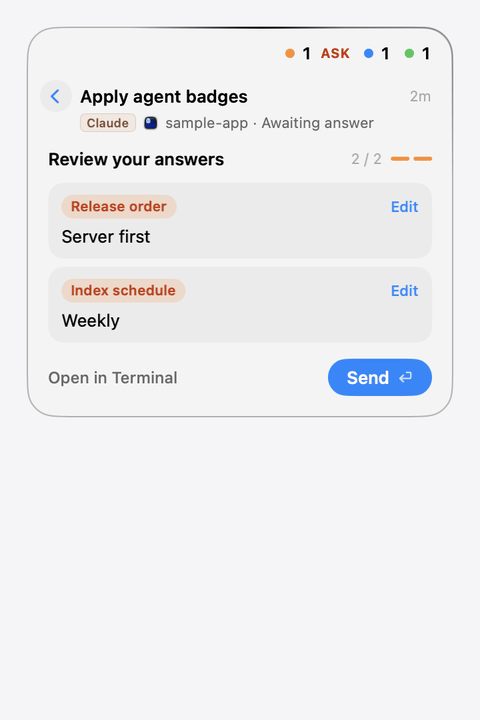
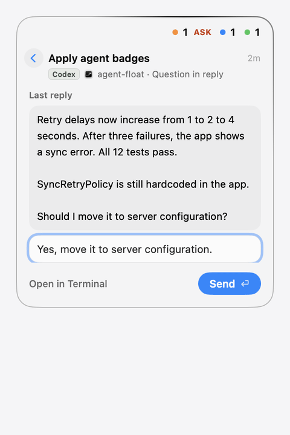
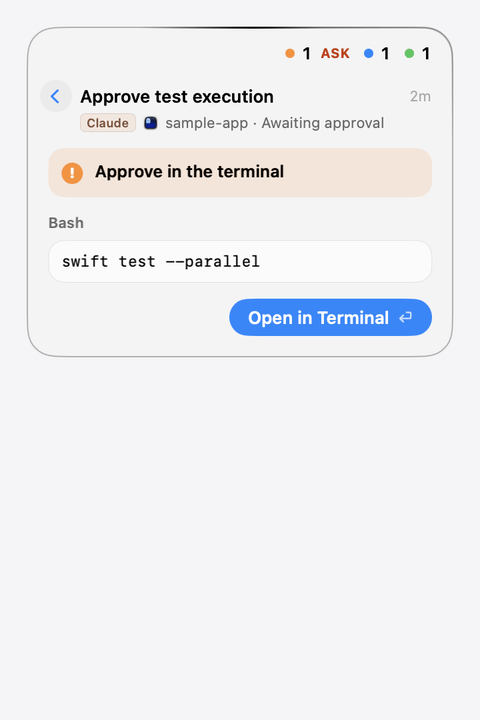
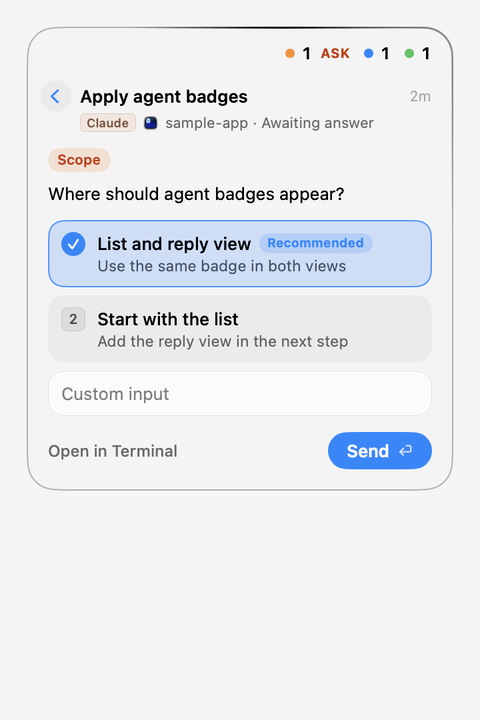
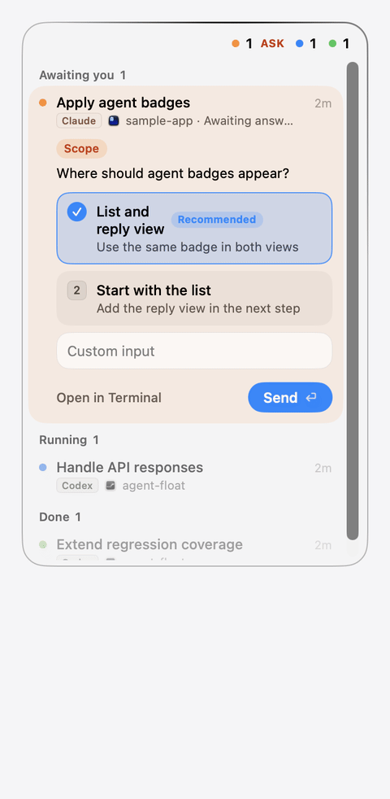
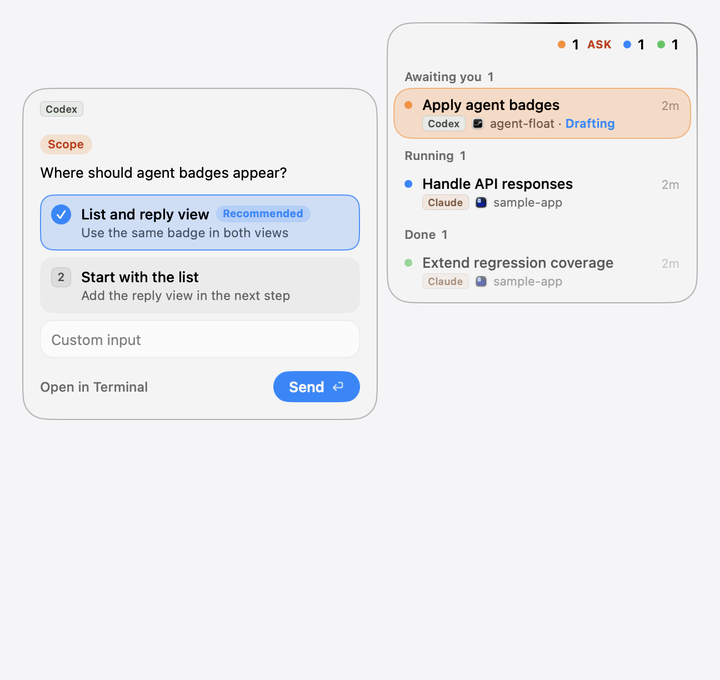

Orange · Awaiting You
A question or approval needs a response. ASK clears when the actual wait resolves.
Agent Float. A small work hub for macOS.
See which agent is working and which session needs your answer. Continue from one small floating panel.
Explore the features · Installation
A local macOS 26+ app. These examples use fictional sessions and simulated replies.
Orange, blue, and green dots show waiting, running, and completed turns.
Click a locatable session to reach its terminal.
Answer supported questions directly in the panel.
Only when you need it.
Select an example. This interactive document never connects to real sessions or sends terminal input.
A question or approval needs a response. ASK clears when the actual wait resolves.
Work is active or expected to resume through a Claude scheduled wakeup, loop, or background job.
The turn ended and can accept further input. This does not guarantee the work succeeded.
Gray means an unknown state, suspected inactivity, or failed observation of a previously known Codex session.
NEW clears when you click its session, manually select the tab in Ghostty/Terminal.app/iTerm2, or work resumes. Expanding the list alone does not clear it. Manual Orca tab and tmux pane changes are not detected.
The name badge identifies the agent. The adjacent app icon identifies its terminal. Both appear on the second row, preserving title space and the meaning of status colors. Agent type does not split the status groups.
Agent identity remains clear without depending on color.
Waiting, running, and done dots keep their existing meanings.
Panel replacement, inline expansion, and side cards all show which agent you are answering.

The panel stops if the question changes, the terminal screen becomes unreadable, or the recorded reply differs. Progress and failure guidance stay visible.
A mismatch or verification timeout is never shown as success.
Do not mix a reply into an existing terminal draft. Ghostty tests with one character and erases that character if a draft was found.
Approval details are read-only. The panel does not approve on your behalf.




Drafts survive returning to the list and reopening the same waiting question. They are discarded when the app exits, the question changes, or the session stops waiting. Expand a long last message with Show All.
If nothing was sent, the result explains why. Recheck returns to editing and reassesses the same question. Open Settings helps recover Accessibility access. Existing terminal replies or ended sessions update the result; untouched results may return automatically to the list. A delivery that sent keys stays visible until acknowledged.
Interrupted input or mismatched records leave FAIL and Needs attention. Close the failure view, open the terminal, or Command-click the session to clear it.

Switch Panel (default) replaces the list. Expand in Row grows the selected row in place. Side Card opens beside the list, aligned with the row.
Outline (default) adds a contrasting boundary. Inverse of Background paints a contrasting surface. Plain Glass leaves the system glass tone unchanged.
Menu Bar (default), Dock, or Both. The Dock icon also appears in Command-Tab. Hiding the menu bar icon preserves settings in the Dock context menu.
The menu is always titled Language, with 한국어 then English. Switch immediately. Until you choose, the first macOS language selects Korean for ko and English otherwise. Manual choices persist.
Drag the summary row. Position persists, is clamped after display changes, and can be reset with Reset Position. The pill appears across Spaces and fullscreen apps; long lists scroll.
Hovering the inactive list does not steal keyboard input. Replies accept keys only while open and return focus on close. Reduce Motion follows macOS settings.


Launch at Login registers the current app location and may require System Settings approval. Register the installed app so cleaning build outputs does not remove it. Quit Agent Float from its menu; the Dock supplies its own Quit action.
| Capability | Claude Code | Codex |
|---|---|---|
| Discovery | Live process and session file; automation can appear without a terminal | Local shared app-server plus a live TUI and uniquely matched terminal |
| Dialog replies | Single/multiple choice, custom input, multiple questions | Single choice, notes, multiple questions |
| Text replies | Supported in compatible terminals | Supported in compatible terminals |
| Approval | Read-only | Read-only |
| Terminal | Destination | Replies |
|---|---|---|
| Ghostty | Tab matched by title/cwd | Visible selected unsplit tab only |
| Orca | Terminal selected through CLI | Supported |
| Terminal.app / iTerm2 | Tab matched by tty | Read-only |
| tmux | Pane, then outer app; tty tab selection in Terminal.app/iTerm2 | Supported, including Orca team tmux |
| Other terminals | Owning app only (Claude fallback) | Read-only |
Without an attached tmux client, attach in a new Ghostty tab. Claude background jobs open a Ghostty tab running claude attach <jobId>. Rows without locators have no navigation highlight/click. Failed navigation beeps; NEW clears only after the destination really becomes frontmost within one second.
Input limits: one line, up to 800 UTF-16 units. Leading /, !, or #, embedded @, and control characters must be handled in the terminal. Ghostty hidden/other-Space/split tabs are read-only. Orca suggestions can look like drafts and block sending.
Codex 0.165.0 discovery requires the local shared server; --no-daemon, separate/remote servers, and unrelated IDE/desktop sessions are excluded. Duplicate/renamed titles may prevent discovery. Screen recognition follows measured Claude 2.1.309 and Codex 0.165.0 layouts; changed layouts stop input rather than guessing.
Question rules inspect each sentence independently of interface language. Korean and English requests are supported. Recognized optional offers and closing remarks count as done. Ambiguous conditions can still be false positives.
System-rendered context menus follow macOS language. Window managers may snap the pill, and Space transitions can slide it temporarily. See the README limitations for details.
Requires macOS 26+ and Swift 6 (Xcode 26 or Command Line Tools). Orca navigation requires /usr/local/bin/orca. Codex discovery requires its local shared app-server.
git clone https://github.com/Enjoywater/agent-float.git
cd agent-float
scripts/create-signing-identity.sh
make installInstall elsewhere with make install INSTALL_DIR=~/Applications. A local-only signing certificate preserves Accessibility and Automation grants between rebuilds; without it, ad-hoc signatures may require renewed approval.
Navigation requests Automation permission per terminal. Ghostty replies also require Accessibility to verify the screen. Restore access in System Settings → Privacy & Security, or use Open Settings from a read-only reply.
Develop with make test, make bundle, and make run. Normal tests never type into real sessions. Dated design records remain in Korean.
Claude automation may create live session files. Temporary titles can appear when no conversation title exists. There is no automatic manual/automated filter; terminal absence alone is not proof.
It must use the local shared server and uniquely match a live TUI, Codex home, cwd, and terminal title. Closed or ambiguous sessions are excluded.
The terminal may be unsupported, hidden, split, or ambiguous, or Accessibility access may be missing. Previews and approvals stay in the terminal.
No. Theme switching, command copying, and the reply demo operate only inside this document. All native recordings use fictional sessions and simulated results.
No. It means the agent's turn ended and can accept input. Review the work before relying on its outcome.